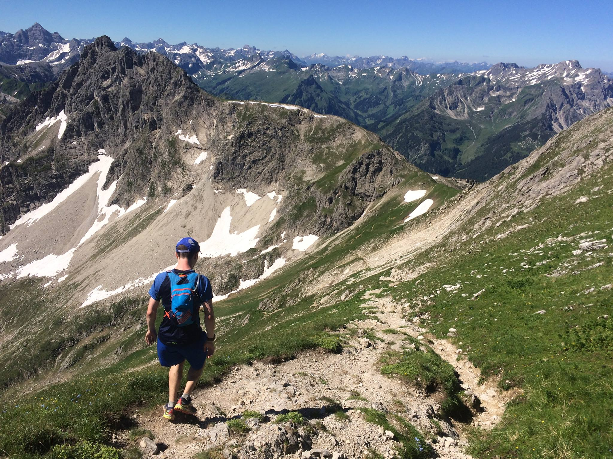

These are some events which I attended during my PhD studies, relating either to my
research or my development as a researcher.
2019
Software Carpentry Workshop (attened as a helper)
University of St Andrews, 22nd-23rd September
2018
British Mathematical Colloquium 2018
University of St Andrews, 11th-14th June 2018
North British Semigroups and Applications Network 28th Meeting
University of St Andrews, 14th-15th June 2018
2017
Edinburgh Mathematical Society Postgraduate Meeting for Students 2017
The Burn, Edzell, 7th-9th June 2017.
Computational Mathematics with Jupyter Workshop
International Centre for Mathematical Sciences, University of Edinburgh,
16th-20th January 2017.
Postgraduate Intradisciplinary Mathematics Symposium 2017.
The Burn, Edzell, 20th-22nd January 2017
2016
Second CoDiMa Training School in Computational Discrete
Mathematics.
International Centre for Mathematical Sciences, University of
Edinburgh, 17th-21st October 2016.

Hiking and running around the Austrian Alps.
This one wasn't an academic trip.